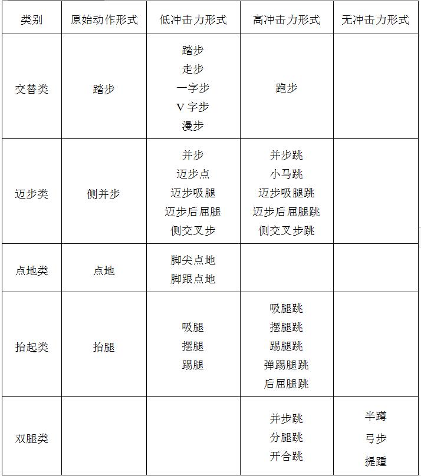
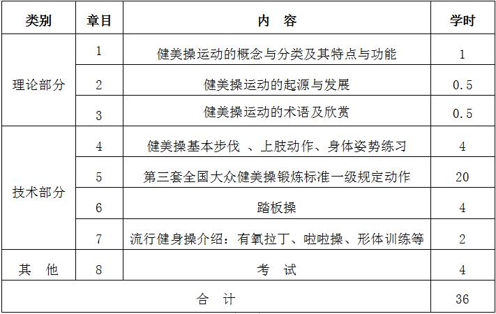
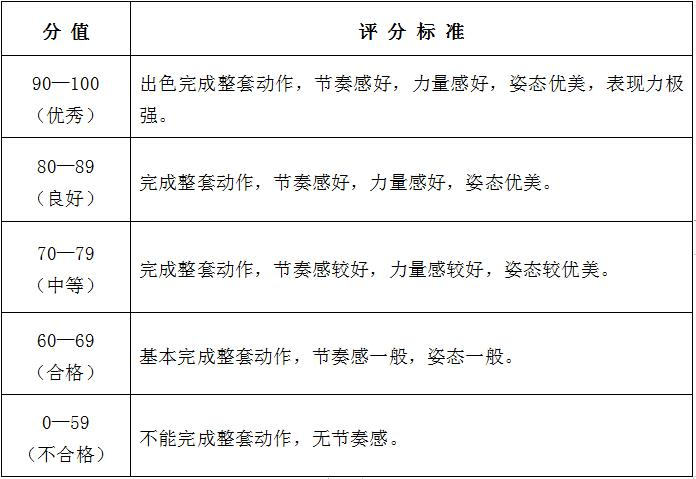

课程管理
|
课程名称 |
公共体育--健美操（Ⅰ） |
课程代码 |
TX031100 |
|
课程类型 |
√通识课 □学科（专业）基础课 □专业发展课 |
课程性质 |
√必修课 □选修课 |
|
开课单位 |
体育学院 |
适用专业 |
非体育专业 |
|
总学时数 |
36 |
周学时数 |
2 |
|
课程学分 |
1 |
编 写 人 |
张琦 |
|
编写时间 |
2017.07.20 |
审 批 人 |
刘其龙 |
一、教学目的
1.通过健美操教学，使学生掌握健美操运动的基本练习方法和技能，能科学地正确地进行健美操锻炼， 提高自己的锻炼能力，并逐步养成自觉锻炼的习惯，具有一定的欣赏健美操运动的能力。
2.根据自己的能力确定健美操的学习目标，通过健美操运动改善心理状态，增强自信心。能测试和评价体质健康状态，掌握有效提高身体素质， 全面发展体能的知识方法，建立健康的生活方式，具有健康的体魄。
3.在健美操运动中表现良好的社会体育道德和互相尊重， 正确处理竞争与合作的关系，成为学校和社区体育活动的积极参与者和组织者。
二、重点与难点
（一）重点：健美操的基本技术和基本知识的教学，培养学生自觉锻炼的习惯，形成终身体育意识。
（二）难点：健美操动作的协调及音乐节奏的配合，健美操的力度及动作衔接，欣赏健美操运动的能力，对自我健康能力的评价。
三、基本内容与要求
（一）理论部分
1.健美操运动的概念与分类及其特点与功能
2.健美操运动的起源与发展
3.健美操运动的术语及欣赏
（二）实践部分内容
1.健美操基本动作
（1）身体姿势练习
①基本站、立、行、走姿势
②基本脚位练习
③基本手型手位
④躯干的基本动作：A．胸部动作；B．腰部动作；C．髋部动作
3.常用上肢动作
（1）常用手型、掌型、拳型、五指张开型
（2）上肢动作、举、屈臂、伸臂、屈臂摆动、上提、下拉、胸前推、冲拳、肩上推、摆动、绕环、交叉
4．成套健美操动作
（1）第三套全国大众健美操锻炼标准一级规定动作
（2）踏板操
5．流行健身操介绍：有氧拉丁、啦啦操、形体训练等。
（三）专项素质
1.徒手或持器械发展全身各部肌肉力量的练习
2.发展身体柔韧性及各关节灵活性的练习
3.发展协调性的练习
4.呼吸方法的练习
5.学生体质健康标准项目训练：女子800米
四、授课内容学时分配
五、成绩考核：
（一）考核方式：现场测试。
综合成绩＝平时成绩×30%＋考试成绩×70%，考试成绩＝专项成绩×70%＋身体素质成绩×30%。 每一部分都有定量或定性的评分标准，其中身体素质为每学期的必考项目，身体素质考试内容为男子1000米、女子800米。
（二）考试内容：
1.健美操专项技术：第三套全国大众健美操锻炼标准一级规定动作。
2.身体素质：女子800米。
（三）评分标准
1.专项技术评分标准
2.身体素质（800米）：评分标准见表1。
六、教材与参考书目
（一）使用教材：
[1] 黄宽柔. 健美操. 北京：高等教育出版社，2008年6月.
（二）参考书目：
[1]黄宽柔, 姜桂平. 舞蹈与健美操. 北京：高等教育出版社, 2001年6月。
[2]孙雄华. 大学体育. 北京：中央民族大学出版社，2010年8月。
表1 身体素质考核评分标准

注：数据来源于国家学生体质健康标准（2014年修订）。